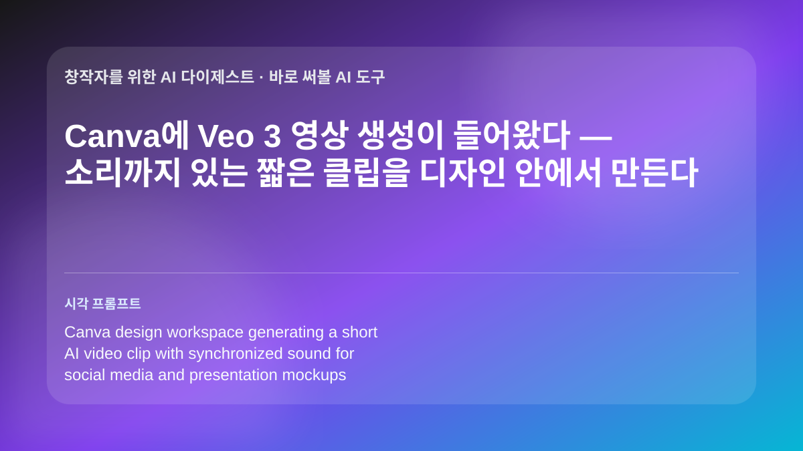

Canva에 Veo 3 영상 생성이 들어왔다 — 소리까지 있는 짧은 클립을 디자인 안에서 만든다

관련 이미지를 생성했습니다
Canva가 Google의 Veo 3 모델을 활용한 “Create a Video Clip” 기능을 공개했습니다. 사용자는 Canva 작업 흐름 안에서 프롬프트로 짧은 AI 영상을 만들 수 있고, Veo 3의 강점인 영상과 동기화된 사운드 생성까지 함께 활용할 수 있습니다. 별도 영상 생성 서비스를 오가던 단계를 줄여 프레젠테이션, 광고 시안, SNS용 모션 소재 제작을 디자인 편집 화면 안으로 끌어온 변화입니다.
인사이트: 교육자와 소규모 창작팀에게는 “완성 영상 제작”보다 수업 도입부, 캠페인 콘셉트, 피치덱의 움직이는 예시를 빠르게 만드는 용도가 현실적입니다. 다만 생성 영상은 브랜드 톤, 인물 표현, 저작권·초상권, 사실성 검수가 필요하므로 외부 공개물에는 사람 편집자의 후반 확인을 남겨야 합니다. 특히 소리가 자동으로 붙는 만큼 음악·효과음의 맥락이 의도와 맞는지도 별도로 점검하는 편이 안전합니다.
Adobe Firefly가 에이전트형 스튜디오로 확장 — “결과”를 말하면 여러 제작 단계를 묶어 실행한다
원문 페이지에서 가져온 이미지
Adobe는 Firefly와 Creative Cloud 전반에 Creative Agent 기능을 확장한다고 발표했습니다. 핵심은 단일 이미지 생성이 아니라, 사용자가 원하는 결과를 설명하면 Firefly가 Photoshop, Premiere, Illustrator, InDesign, Frame.io 같은 앱의 여러 작업을 순서대로 조합해 실행하는 방향입니다. Adobe는 Firefly 보드, 모델 선택, 팀 협업, 외부 AI 플랫폼 연결까지 함께 강조했습니다.
인사이트: 디자이너와 영상 제작자에게 중요한 변화는 “툴 하나의 새 버튼”이 아니라 제작 파이프라인을 자연어로 묶는 실험이 본격화됐다는 점입니다. 무드보드 생성, 레이아웃 변형, 러프 컷 정리, 리뷰용 버전 제작처럼 반복성이 큰 단계는 빨라질 수 있지만, 브랜드 판단·편집 리듬·저작권 확인은 자동화하기 어렵습니다. 수업에서는 학생에게 완성물을 한 번에 뽑게 하기보다, 에이전트가 만든 중간 결과를 비평하고 수정하는 과정을 평가하는 방식이 어울립니다.
Pika Director Suite — 영상 생성이 “클립 한 개”에서 AI 타임라인 편집으로 이동한다
원문 페이지에서 가져온 이미지
Pika의 Director Suite는 브레인스토밍, 스크립트, 스토리보드, 클립 생성, 타임라인 편집을 하나의 에이전트형 영상 제작 인터페이스로 묶는 실험입니다. 공개 페이지는 채팅과 음성으로 프로젝트를 지시하고, AI가 영상 프로젝트의 맥락을 이해한 상태에서 컷을 만들고 배열하는 방식을 제시합니다. 단순히 텍스트를 영상으로 바꾸는 기능보다, 여러 클립을 연결해 하나의 짧은 콘텐츠 구조를 만드는 쪽에 초점이 있습니다.
인사이트: 숏폼 제작자, 영상 수업, 브랜드 콘텐츠 팀은 이 흐름을 “완성 자동화”가 아니라 프리프로덕션과 러프 편집의 속도 향상으로 볼 필요가 있습니다. 장면별 의도, 캐릭터 일관성, 리듬, 자막, 저작권 소재 검수는 여전히 사람이 잡아야 하며 긴 서사 영상에서는 오류 누적도 큽니다. 그래도 기획안에서 바로 스토리보드와 테스트 컷을 뽑아 비교하는 실습에는 매우 유용한 방향입니다.
AI 음성으로 읽은 『오디세이』 — 유명 배우 보이스 라이선스가 오디오북 제작의 새 변수가 됐다
원문 페이지에서 가져온 이미지
ElevenLabs는 Sir Michael Caine의 AI 음성으로 내레이션한 『The Odyssey』 오디오북을 공개했습니다. 이 사례는 합성 음성이 단순한 임시 더빙을 넘어, 배우의 허가와 브랜드를 전제로 한 출판·오디오 콘텐츠 상품으로 쓰이는 흐름을 보여줍니다. 텍스트 낭독, 다국어 버전, 교육용 고전 콘텐츠 제작에서 음성 AI가 실제 배포물 안으로 들어오는 사례입니다.
인사이트: 작가, 출판사, 교육 콘텐츠 제작자는 긴 텍스트를 음성 콘텐츠로 확장하는 비용과 시간을 크게 줄일 수 있습니다. 하지만 유명인 목소리나 특정 화자의 음색은 권리 허락, 계약 범위, 표시 방식이 핵심이며, 청취자가 AI 음성임을 알 수 있게 고지하는 문제도 중요합니다. 수업에서는 같은 텍스트를 여러 낭독 톤으로 비교하며 “목소리가 해석을 어떻게 바꾸는가”를 토론하기 좋은 사례입니다.